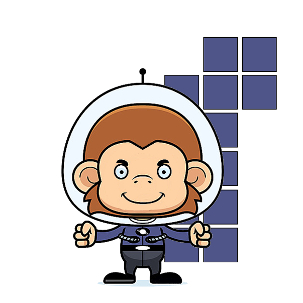

Pourquoi ce choix ?

Nous avons choisi de répondre au problème commun en nous plaçant à la fois sur la prévention et sur l’après crise. En effet nous avons pensé un système permettant d’aider les potentielles victimes mais aussi prendre soin des personnes effrayées et/ou en danger.
Notre désirons proposer une solution se mettant en place avant l’arrivée d’événements, une solution qui serait déjà prête en cas de situation de crise afin de pouvoir assister un maximum de personnes.
Notre solution touche donc les victimes et les secours ; elle permet la mise en sureté des personnes qui de fait ne seront pas dans les rues, exposées ou gênant la police, les urgences… et se présente en deux phases.
La première consiste en l’inscription de personnes désirant aider durant les éventuelles futures crises qu’il s’agisse de crise climatique ou humaine (attentats,…).
Ces personnes pourront être des pompiers volontaires, des médecins, des policiers ou infirmiers en formation, de simples personnes sans compétences médicales particulières mais désirant aider en fournissant un logement et d’autres encore.
Tous les profils sont les bienvenus et exposeront dans le formulaire d’inscription, les moyens mis en place pour venir en aide aux autres. Ils indiqueront également la région dans laquelle ils se situent, les zones qu’ils peuvent aider.
La seconde phase aura lieu durant la crise éventuelle. Les personnes ayant besoin d’aide pourront poster leur besoin sur Twitter avec le hashtag #needurhelp. Les tweets sont traités de façon à trouver la meilleure solution pour les personnes demandant de l’aide. Ils sont alors mis en relation avec les personnes s’étant inscrites sur notre application à qui la plateforme de traitement envoie un mail pour les prévenir qu’une ou plusieurs personnes ont besoin d’eux. Cette application permettra de réduire le spam aux réseaux d’urgences.
Comment cela fonctionne ? Comme nous l’avons évoqué précédemment, notre système est simple ; nous traitons les tweets contenant #needurhelp et, grâce aux mots clefs nous définissons le besoin de la personne ayant posté le message. Une fois ce besoin identifié, nous faisons le lien entre ce dernier et la personne la plus susceptible de pouvoir y subvenir.